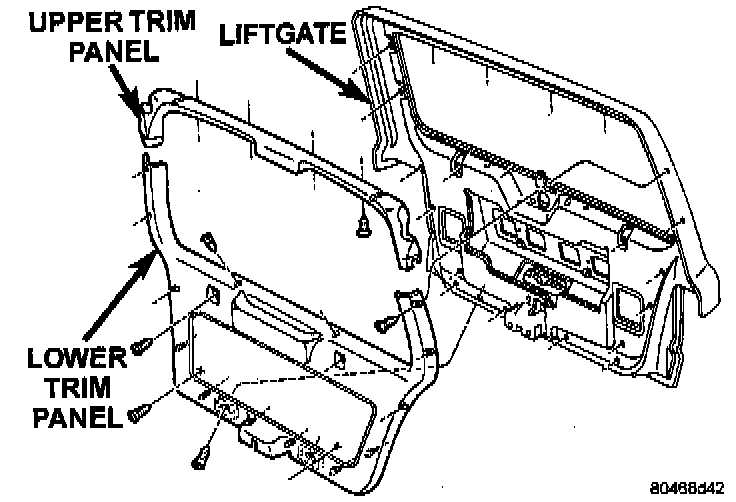
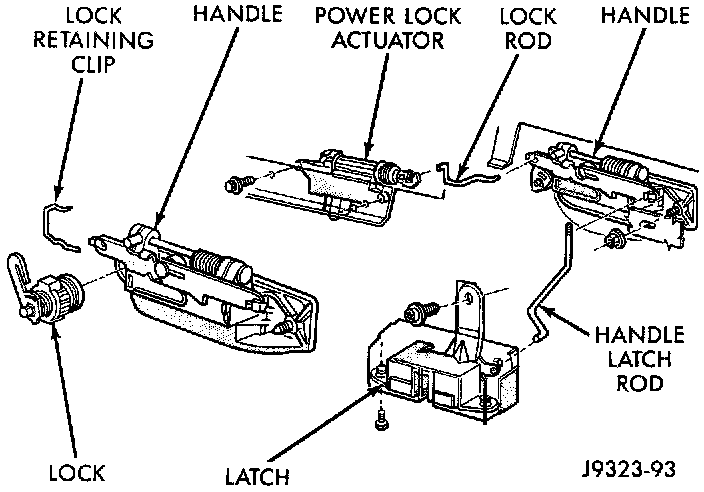

Liftgate Ajar Switch
REMOVAL1. Disconnect and isolate the battery negative cable.
Liftgate Trim Panel:

2. Remove the screws that secure the liftgate lower trim panel to the liftgate.
3. Using a wide flat-bladed tool such as a trim stick, pry the trim panel away from the liftgate around the perimeter and remove the trim panel.
NOTE: To aid in the removal of the trim panel, start at the bottom of the panel.
Liftgate Latch/Lock Components:

4. Remove the three screws that secure the liftgate latch to the liftgate.
5. Disconnect the liftgate handle latch actuator rod from the latch.
6. Unplug the liftgate ajar switch wire harness connector from the latch.
7. Remove the latch from the liftgate.
8. Reverse the removal procedures to install. Tighten the latch mounting screws to 7 N.m (62 in lbs.).